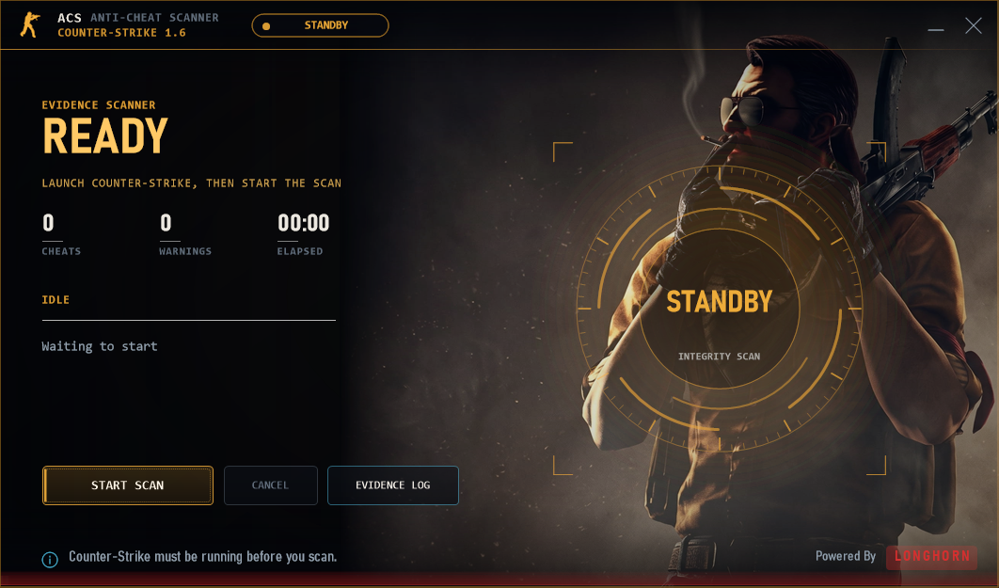
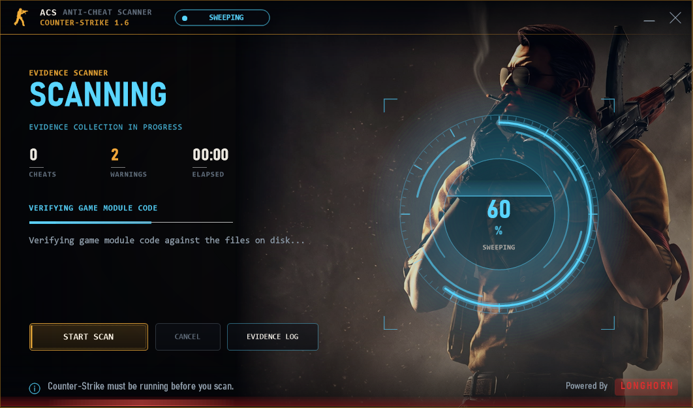
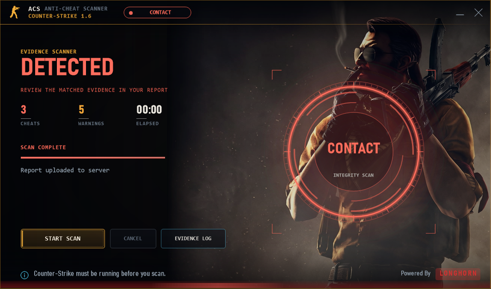
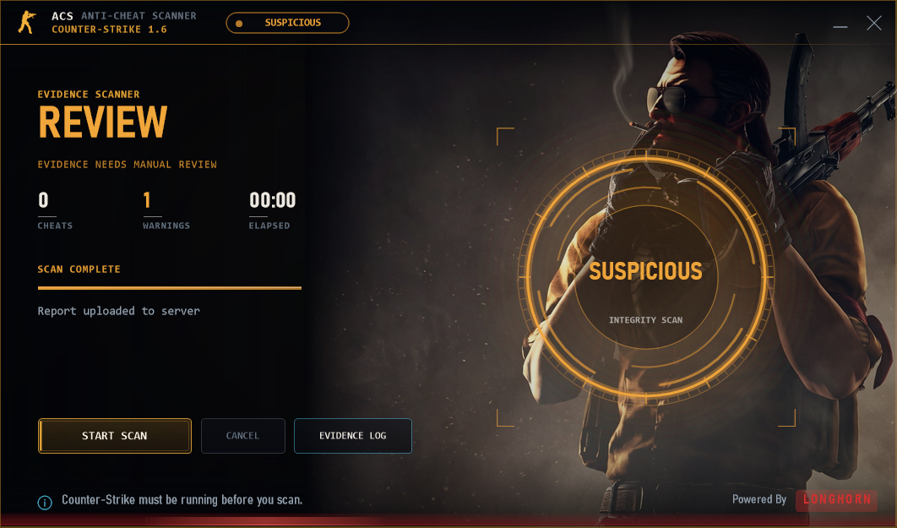

LongHorn ACS combines a Windows scanner, a web report dashboard and an optional server engine. It collects strong evidence, explains it clearly, and leaves every ban to a human operator.
Each component can stand alone, but they share one vocabulary of evidence.
Attaches to a running hl.exe, inventories the game, checks it against a signature database and an artifact corpus, then uploads a signed report.
Stores reports, shows exactly what was found, ranks lower-confidence items for review, and supports compare, history and PDF export.
An optional ReHLDS plugin that analyses how a player actually moves, aims and fires — with no client cooperation required.
Most of the surviving CS 1.6 population runs repacks, community clients and emulators that modify the engine by design. A scanner that cannot tell that apart from cheating is worse than useless.
Engine code is compared byte-for-byte against the file on disk — hooks and patches can't hide.
Steam, NextClient, GSClient, RevEmu and other emulators are identified by name and hash, so their own detours aren't flagged.
Every hash ever seen, scored by how many distinct machines carry it — common files become clean automatically.
Processes holding handles on the game, foreign threads and overlay windows are surfaced for review.
Alias graphs and control-flow shapes catch bunny-hop, rapid-fire and no-recoil scripts regardless of naming.
Client and server evidence combine into one explainable risk score per SteamID.
A focused Windows client — idle, scanning, and clear verdicts.

Idle
Scanning
Detected
Review